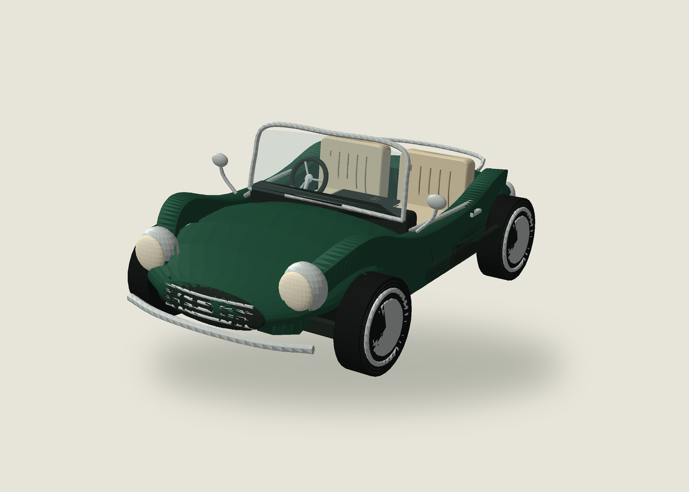

Actual 3D geometry. Drag to rotate · pinch or scroll to zoom.30% smaller than the previous convertible.

This browser could not start 3D graphics. Open this page in Chrome or Safari, or download the actual model below.